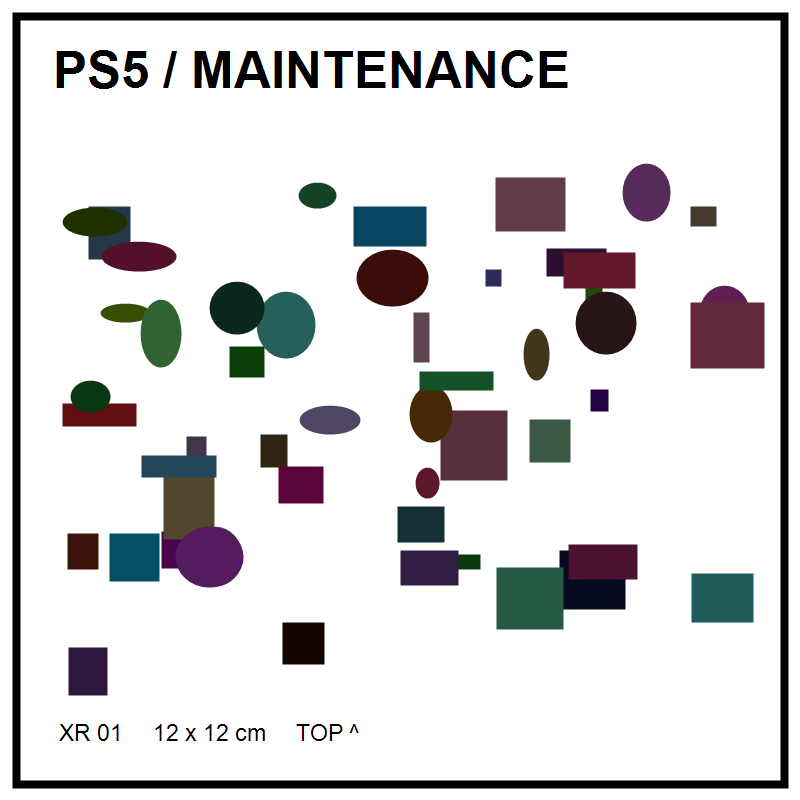

Размер всего изображения — 120 × 120 мм.

Печать в масштабе 100%, без подгонки. Проверьте размер линейкой.
Закрепите плоско рядом с консолью. Для текущих координат — на столе, надпись TOP направлена от вас, консоль справа. Не размещайте на снимаемой крышке.
В браузере: Ctrl+P. Распечатку можно подготовить позднее, перед проверкой Android.